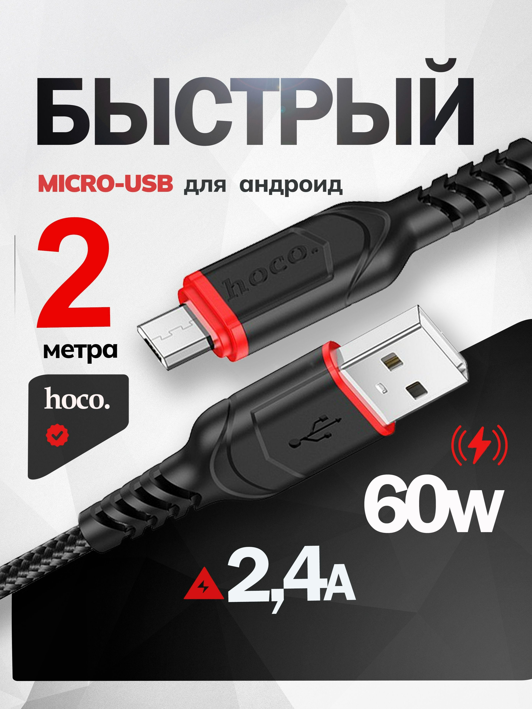

Кабель microUSB 2 м Hoco
ПроводаКатегория
Провода
Тип
кабель USB → Micro-USB
Длина
2 м
Разъём
USB-A
Разъём устройства
Micro-USB
Назначение
зарядка и передача данных
Бренд
HOCO
Кратко
Это кабель micro-USB длиной 2 м от HOCO, предназначенный для зарядки и передачи данных совместимым устройствам с разъёмом Micro-USB.
Описание
Кабель такого типа используют для подключения смартфонов, кнопочных телефонов, внешних аккумуляторов, колонок, камер и другой техники со стандартным Micro-USB. Длина 2 м удобна, когда розетка находится далеко или нужен запас по свободе размещения устройства. Для открытого каталога точную модель HOCO по одному лишь названию определить нельзя, поэтому карточка описывает канонический тип изделия — microUSB-кабель HOCO длиной 2 м. Характеристики по току, материалу и скорости передачи зависят от конкретной линейки и без точной модели не фиксируются.
id hw-2026-084